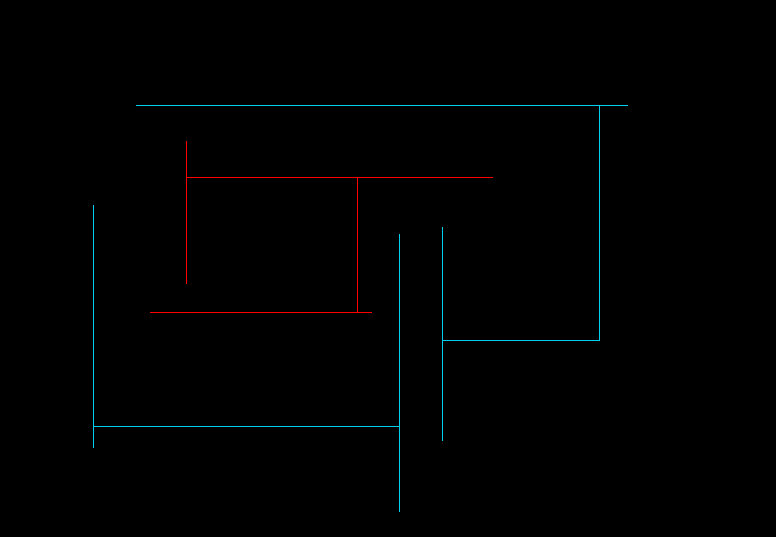
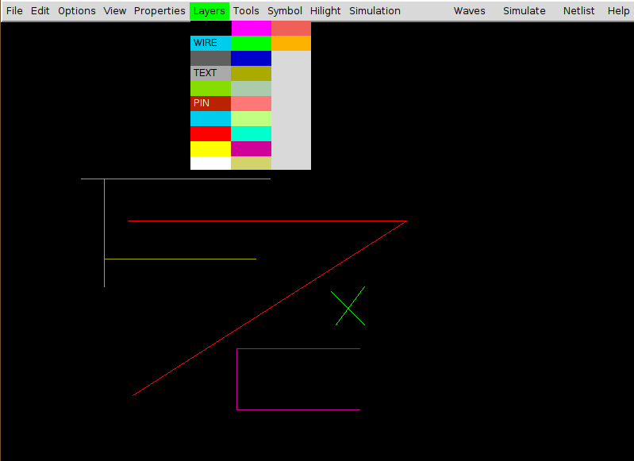
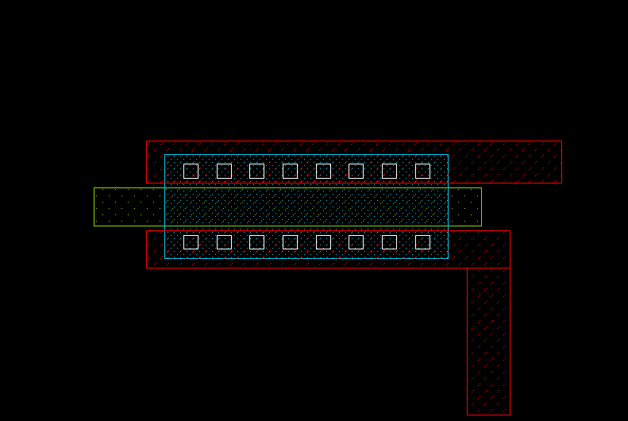
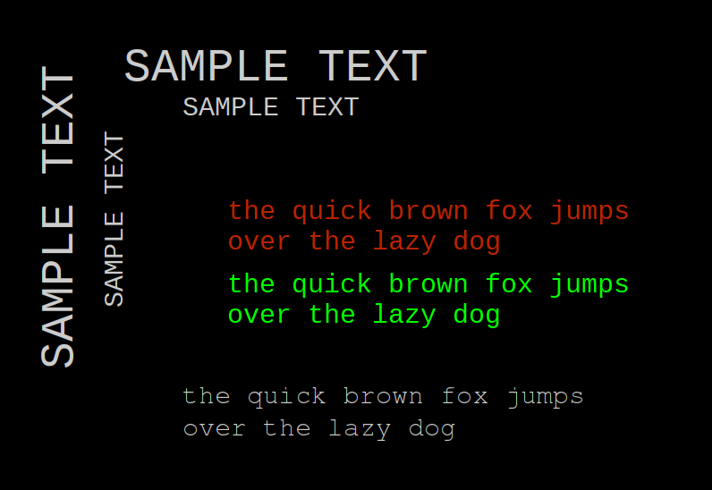
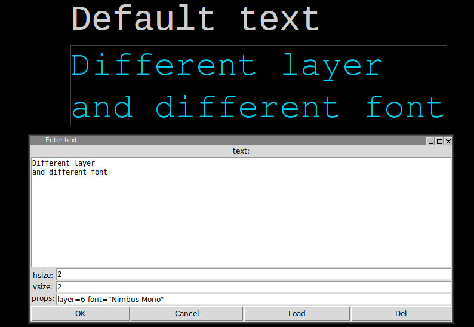
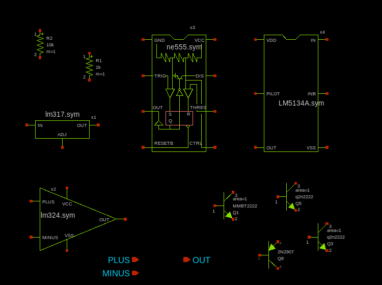

XSCHEM ELEMENTS
WIRES
Wires in XSCHEM are the equivalent of copper traces in printed circuit boards or electrical conductors. wires are drawn as lines but the electrical connectivity graph is built by XSCHEM. To draw a wire segment point the mouse somewhere in the drawing window and press the 'w' key. A rubber wire is shown with one end following the mouse. Clicking the left mouse button finishes the placement. The following picture shows a set of connected wires. There are many wire segments but only 3 electrical nodes. XSCHEM recognizes connection of wires and uses this information to build up the circuit connectivity. All wires are drawn on the 'wire' layer. One electrical node in the picture below has been highlighted in red (this is a XSCHEM function we will cover later on).
LINES
Lines are just segments that are used for drawing. Lines do not have any electrical meaning, in fact when building the circuit netlist lines are completely ignored. XSCHEM uses different layers to draw lines. Each layer has its own color, allowing to draw with different colors. Lines are placed like wires, but using the 'l' key. The 'Layers' menu allows to select various different layers (colors) for the line.
RECTANGLES
Rectangles like Lines are drawable on multiple layers, and also do not carry any electrical information. A specific 'PIN' layer is used to make pins that are used to interconnect wires and components. Different fill styles (or no fill) can be defined for each layer. Rectangles are placed with the 'r' bindkey
POLYGONS
Polygons are paths that can be drawn on any layer. Placements begins with the 'ctrl-w' key and continues as long as the user clicks points on the drawing area. Placement ends when:
- the last point is coincident to the first point.
- or by clicking the right mouse button, for an open polygon.
- or by hitting the Return key, for a closed polygon. (this can be done also by clicking the last point coincident to the first polygon point).
TEXT
Text can be placed with the 't' bindkey. A dialog box appears where the user inputs the text and text size.
The layer property can be used to draw text on a different layer, for example, setting layer=6 will draw on cyan color. A font property is defined to change the default font. Use only Monospaced fonts because bounding box is not correctly calculated by XSCHEM for proportional typefaces. You wil learn in the xschem properties chapter how to set, edit and change object properties.
SYMBOLS
Symbols are graphical elements that represent electrical components. A symbol represents an electronic device, like for example a resistor a bipolar transistor, an amplifier etc. As you can see graphically symbols are built with lines, rectangles, polygons and texts, the graphical primitives shown before. In the picture below some components are placed in a schematic window. Components are instances of symbols. For example you see three placements of the 'npn' bipolar transistor symbol. Like in C++, where objects are instances of classes, here components are instances of symbols.
Symbols (like schematic drawings) are stored in xschem libraries. For XSCHEM a library is just a directory placed under the XSCHEM_DESIGN_PATH directory, see the installation slide. A symbol is stored in a .sym file.
user:~$ cd xschem_library/ user:~/xschem_library$ ls devices examples mylib simulations user:~/xschem_library$ cd devices user:~/xschem_library/devices$ ls *.sym ammeter.sym generic.sym noconn.sym switch_hsp.sym arch_declarations.sym gnd.sym npn.sym switch.sym architecture.sym ind.sym opin.sym title.sym assign.sym iopin.sym package_not_shown.sym tline_hsp.sym attributes.sym ipin.sym package.sym use.sym bus_connect_not_shown.sym isource_arith.sym param_agauss.sym vccs.sym bus_connect.sym isource_pwl.sym param.sym vcr.sym capa.sym isource.sym parax_cap.sym vcvs.sym cccs.sym k.sym pmos3.sym vdd.sym ccvs.sym lab_pin.sym pmos4.sym verilog_delay.sym connect.sym lab_wire.sym pmosnat.sym verilog_timescale.sym delay_hsp.sym launcher.sym pnp.sym vsource_arith.sym delay_line.sym netlist_at_end.sym port_attributes.sym vsource_pwl.sym delay.sym netlist_not_shown.sym res.sym vsource.sym diode.sym netlist.sym spice_probe.sym zener.sym flash_cell.sym nmos3.sym spice_probe_vdiff.sym generic_pin.sym nmos4.sym switch_hsp_pwl.sym
To place a symbol in the schematic window press the 'Insert' key. A file chooser pops up, go to the xschem design root directory (${HOME}/xschem_library in the distribution by default), descend in one of the xschem design directories (devices for example) and select a symbol (res.sym for example) The selected symbol will be instantiated as a component in the schematic at the mouse pointer coordinates.